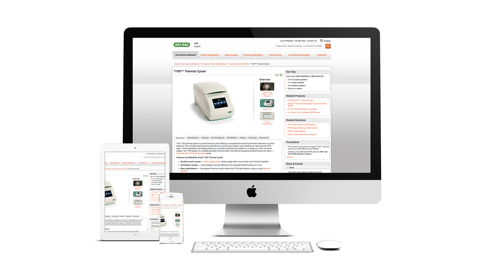

<div id="project">
	<section class="content bio-rad">
		<div class="block-content">			
			<div class="project-title poster">
				<div class="layer">
				   <h2>Bio-Rad Webpage Redesign</h2>
				   <p class="tags">UX Designer</p>
				</div>
			</div>     
		</div>
	    <div id="section-services" class="services-wrap">
			<div class="row">

				<div class="col-md-10 col-md-offset-1 center section-title">
					<h3>troubleshooting</h3>
				</div>

				<!-- Single Service Starts -->
				<div class="col-md-6 col-sm-12 service animated" data-animation="fadeInLeft" data-animation-delay="700">
					<span class="service-icon center"><i class="icon icon-basic-world fa-3x"></i></span>
					<div class="service-desc">
						<h4 class="service-title">Success Business</h4>
						<p class="service-description justify">
							Bio-Rad Laboratories(NYSE: BIO and BIOb) ranks among the top five life science companies in the world and maintains a solid reputation for quality and innovation. 
						</p>
					</div>
				</div>
				<!-- Single Service Ends -->
				
				<!-- Single Service Starts -->
				<div class="col-md-6 col-sm-12 service animated" data-animation="fadeInUp" data-animation-delay="700">
					<span class="service-icon center"><i class="icon icon-basic-archive-full fa-3x"></i></span>
					<div class="service-desc">
						<h4 class="service-title">Growing products portfolio</h4>
						<p class="service-description justify">
							As Bio-Rad gets more products in its portfolio, it seeks to sell more commoditized technologies via web, so that sales representatives could focus on higher value products.
						</p>
					</div>
				</div>
				<!-- Single Service ends -->
				
				<!-- Single Service Starts -->
				<div class="col-md-6 col-sm-12 service animated" data-animation="fadeInRight" data-animation-delay="700">
					<span class="service-icon center"><i class="icon icon-basic-display fa-3x"></i></span>
					<div class="service-desc">
						<h4 class="service-title">10+ year old website</h4>
						<p class="service-description justify">
							The bio-rad.com was launched back in 1997, and we saw lots of room for improvement to make it a trendy website: hero images, card layouts, responsive design, etc...
						</p>
					</div>
				</div>
				<!-- Single Service Ends -->
				
				<!-- Single Service Starts -->
				<div class="col-md-6 col-sm-12 service animated" data-animation="fadeInUp" data-animation-delay="700">
					<span class="service-icon center"><i class="icon icon-basic-heart-broken fa-3x"></i></span>
					<div class="service-desc">
						<h4 class="service-title">Information Overflow</h4>
						<p class="service-description justify">
							As the information architecture kept growing in the past 10+ years, it takes 6+ clicks to navigate to a single product's page, where all contents are displayed on the same level.
						</p>
					</div>
				</div>
				<!-- Single Service Ends -->
			</div>
		</div>
		<div class="project-media">
		    
		</div>
		<div id="step-1" class="section-step step-wrap">
			<div class="container step animated" data-animation="bounceInLeft" data-animation-delay="700">	
				<!-- Step Description Starts -->
				<div class="col-md-8 step-desc">
					<div class="col-md-2 center">
						<div class="step-no">
							<span class="no-inner">1</span>
						</div>
					</div>
					
					<div class="col-md-10 step-details">
							<h3 class="step-title color-scheme">Contextual inquiry</h3>
							<p class="step-description">Cillum laboris <strong>consequat</strong>, qui elit retro next level 
							skateboard freegan hella. Cillum laboris consequat qui elit retro next level 
							skateboard freegan hella. Cillum laboris consequat skateboard freegan hella</p>
							
							<ul class="sub-steps"> <!-- Sub steps here -->
								<li>
									<span class="icon fa fa-comments color-scheme"></span>
									<span class="sub-text">skateboard freegan hella. Cillum laboris consequat qui elit</span>
								</li>
								<li>
									<span class="icon fa fa-pencil-square-o color-scheme"></span>
									<span class="sub-text">Documenting collected data</span>
								</li>
							</ul>
					</div> <!-- End step-details -->
				</div>
				<!-- Step Description Ends -->
				<div class="col-md-4 step-img">
					 <!-- Step Photo Here -->
				</div>
			</div>
		</div>
	</section>
 </div>

